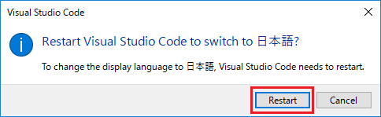
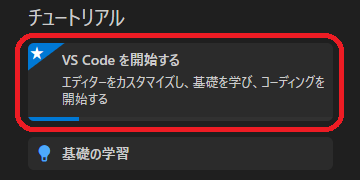
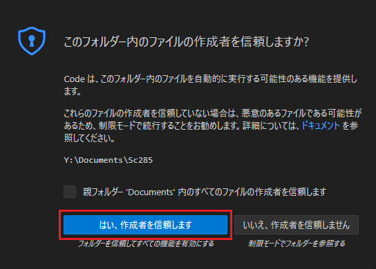
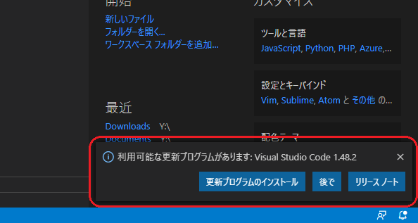
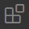
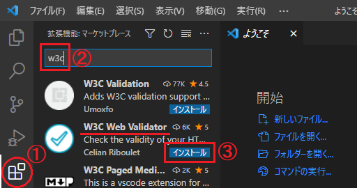
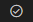
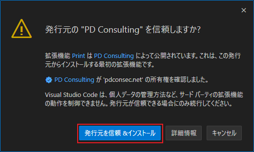

以下，Windows 版の Visual Studio Code で初期設定する際の手順を記述する． 他の OS の場合も同じような手順となるが，必要に応じて適宜読み替えていただきたい．


Visual Studio Code には，エクスプローラーの機能が備わっているので，よく使うフォルダーを開いておくと，
次回から自動的にそのフォルダーを開いてくれるので便利である．
（Sc185(2) IT応用演習を受講するなら，public_html を開いておくとよい）

Visual Studio Code の各種の設定は，左下の歯車アイコンのメニューから「設定」を選び （または Ctrl-, キーでもよい），「設定」のページを開いて行う．
「設定」のページには多数の設定項目があるが，ページ先頭の「設定の検索」にキーワードを 入れることで，表示を絞り込むことができる．
設定項目をリセットする（設定前の元の値に戻す）には，その項目の左の歯車アイコン （マウスカーソルを近づけると表示される）をクリックして現れるメニューから， 「設定をリセット」を選ぶ．
半角スペースを目に見えるように表示する（薄い中黒「･」で表示する） かどうかを設定できる．既定値の selection は，文字列として選択したときにのみ， そのように表示されるが，all にしておくと，常にそのように表示される．
all にしておくと，行末の余分なスペースや，全角スペースを見分けることができる†ので，
all にするのがおすすめ．
（† 全角スペースは「薄い中黒」ではないスペースとして見分けられる．）
長い行の折り返しの仕方を決める設定項目．既定値の off では折り返しをしないが， この場合，長い行はウィンドウの右に「はみ出し」て見えなくなるので，on にして， ウィンドウの右端で折り返す設定にしておくとよい．
この設定項目の設定値にかかわらず，「表示」メニューの「右端での折り返し」 （Alt-Z でもよい）で，折り返しをするかしないかを切り替えられる．
ファイルを読み込む際に，文字コードを自動的に推定して設定してくれる機能． 既定値では「無効」になっているが，チェックを付けて「有効」にしておく方が便利かもしれない． 推定された文字コードは右下に表示される．
文字コードの推定に失敗した（間違えた）場合は，右下に表示された文字コードの表示をクリックし， 「エンコード付きで再度開く (Reopn with Encoding)」を実行して，文字コードを指定して開くとよい．
Visual Studio Code の更新プログラムがリリースされたときの取り扱いを設定する． 自宅等で使用している場合は，既定値の default のままにしておくのが良いが， CSLドメインのPCでは，一般ユーザは更新ができないので，none にしておくと，更新を促すメッセージ （下図参照）が表示されなくなる．

Visual Studio Code では，HTML を Emmet と呼ばれる略記法で入力し， それを自動的に HTML に変換（展開）する機能が組み込まれている （cf. Emmet snippets）． この機能はうまく使えば便利であるが，慣れていないと，予期せぬ変換が勝手に行われて， かえって混乱を招く場合がある．そのため，初心者はこの機能を無効にしておく方が良い． 無効にする場合は，この設定項目を never にする．
Visual Studio Code では，HTML のタグを入力したときに対応する閉じタグを自動的に 挿入したり，「</」と入力すると，その場所より前でまだ閉じられていない最も近い開きタグに対応する閉じタグを自動的に挿入したりするようになっている．この機能も，慣れていないと，予期せぬ挿入が勝手に行われて， かえって混乱を招く場合がある （cf. Close tags）． そのため，初心者はこの機能を無効にしておく方が良いかもしれない． 無効にする場合は，この設定項目のチェックを外す．
ウィンドウの配色（ダークカラー（暗色）にするかライトカラー（明色）にするか）を，Windows のシステムカラーに合わせるための設定．デフォルトではダークカラー（暗色）になっているが，チェックを付けて有効にすると，通常はライトカラー（明色）になる．お好みで決めるとよい．
ユーザーの利用データを Microsoft に送信するかどうかを設定する． all, error, crash, off のいずれかの値を指定する． 既定値は all で，この Visual Studio Code がクラッシュ（エラーにより停止すること）したときの情報（クラッシュレポート）とそれ以外のエラー情報，および通常の利用状況のデータを送信するが，off にすると，すべての情報が送信されなくなる．
Visual Studio Code は，「拡張機能」を後から追加することで，機能を拡張することができる． 「拡張機能」は，以下の手順で追加できる．

をクリックしてサイドバーを表示する．

が表示されたら， インストール完了．この拡張機能 W3C Web Validator の使用法はこちら．

{kind=link}
{kind=link}
{kind=link}
{kind=link}
{kind=link}
{kind=link}
{kind=link}
{kind=link}
{kind=link}
{kind=link}